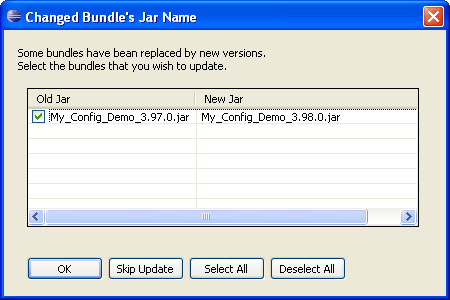

Adding Bundle Resources
Since deployment packages can contain bundle resources, the Deployment Package Editor enables you to add different OSGi bundles in the Deployment Package Project file and modify their properties. Information about the contained resources is placed in the so-called Name section of the manifest file and can be viewed in the Manifest tab of the Deployment Package Editor. By default, the initially created Deployment Package Project file holds no bundle entries.
The bundles which you will add to a deployment package might be in either of the following formats:
- Ready bundle JAR file - When the deployment package is generated, the bundle JAR file will be directly included in the package without additional generation.
- Plug-in project opened in the active workspace - When the deployment package is generated, first the plug-in project will be built and a bundle JAR file will be exported from the project. Then, the produced JAR file will be included in the package.
To add a new bundle resource to a Deployment Package Project file:
- Launch the Deployment Package Editor by double-clicking on a Deployment Package Project file (.dpp) in one of the navigation views.
- Go to the Bundles tab in the activated editor.
- To add a bundle to the package, click the New button. An empty row appears in the bundle table.
- In the empty row specify the following properties for the bundle resources contained in the targeted deployment package:
- Bundle Path - Use the Browse (...) button in the Bundle Path column of the bundle resource to browse for a bundle JAR file (.jar) or for a plug-in project file (.project) in the file system or type the bundle path by hand. In case the bundle resource is located in the currently selected project, it is represented by a relative path to its JAR file or to its project file, i.e. <.>\<bundle_name>.jar.
- Name - Specify the path name of the bundle resource within the targeted deployment package JAR by typing it in the Name column of the bundle. This section holds the value of the Name manifest header of the deployment package. The default path name is bundles/<bundle_name>.jar.
- Symbolic Name - The Deployment Package Editor automatically retrieves and shows in the table the value of the Bundle-SymbolicName manifest header. In case, this header is not mentioned in the resource manifest file or the bundle resource itself is not available, enter a value for the symbolic name of the bundle.
- Version - The Deployment Package Editor retrieves the value of the Bundle-Version manifest header of the resource and automatically fills it in the empty cell for the bundle. In case, this header is not mentioned in the manifest file of the added bundle or the bundle resource itself does not exist, type the version of the bundle resource following the convention introduced in the OSGi Specification.
- Customizer - Select one of the options from the drop-down list to indicate whether the added bundle holds Resource Processors which handle the included in this deployment package non-bundle resources at install and uninstall time.
- Missing - Select the true option of the drop-down list to indicate that the bundle is logically a part of the generated deployment package, but is not physically included in the deployment package JAR file. Such bundles are only mentioned in the Name section of the manifest file of a Fix Package. It is a variety of a deployment package used to quickly upgrade or downgrade an existing deployment package and all bundle resources marked as missing should be available in the initial version of this deployment package. The purpose of including such bundle resources in the manifest file of a deployment package is to distinguish between resources that will not be changed and resources that must be removed.
- Custom Headers - Enter some additional custom headers by using the Browse (...) button in the Custom Headers column of the bundle resource. In the displayed Bundle Custom Headers dialog, use the New button to add a new empty row in the table. Then type by hand the header name in the text field under the Key column and the header value in the text field under the Value column. When ready, click OK.

Figure 1: Adding bundle resources to a deployment package.
- Save the Deployment Package Project file to store the changes made in connection with the bundle resources present in the targeted deployment package.
Automatic Update Detection
If a bundle, added to a deployment package, is generated from an Eclipse plug-in project with its JAR file name following the versioning convention implemented in the Eclipse plug-in development environment (PDE), the Deployment Package Editor will automatically detect changes in the version segment of the JAR file name and will consider such changes as JAR file updates. In such case, when you open a Deployment Package Project file or try to create a deployment package which contains bundle resources with changed file names, the editor informs you of this change by displaying the following dialog:

Figure 2: Detected changes in the JAR file names of bundle resources participating in a deployment package.
It is recommended, but not obligatory, to use the newly discovered JAR file updates. Otherwise, your attempts to create a deployment package JAR holding bundle resources updated in this way will fail as the editor will not be able to locate them in the file system.
Tip: To automatically accept bundle updates related to the version part of bundle file names, check the Accept bundle version updates automatically box in the mTookit preferences. See "Configuring Deployment Package Editor" for information about Deployment Package Editor preferences.
Common Errors
When adding new bundle resources to a deployment package, you may encounter some error messages. They may have to do with the following most common errors:
- Missing bundle resource symbolic name
- Missing bundle resource version.

Deployment Package Overview
Deployment Package Editor

Creating a Deployment Package Project File
Generating a Deployment Package
Quick Deployment Package Build
Exporting Deployment Package Build Files
Configuring Deployment Package Editor
Plug-in Project
Plug-in Project from Existing JAR Archives